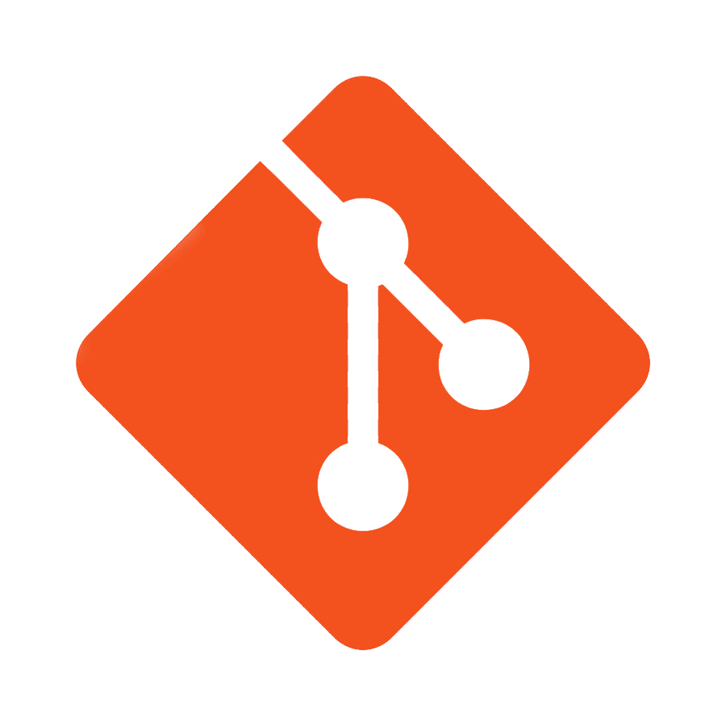
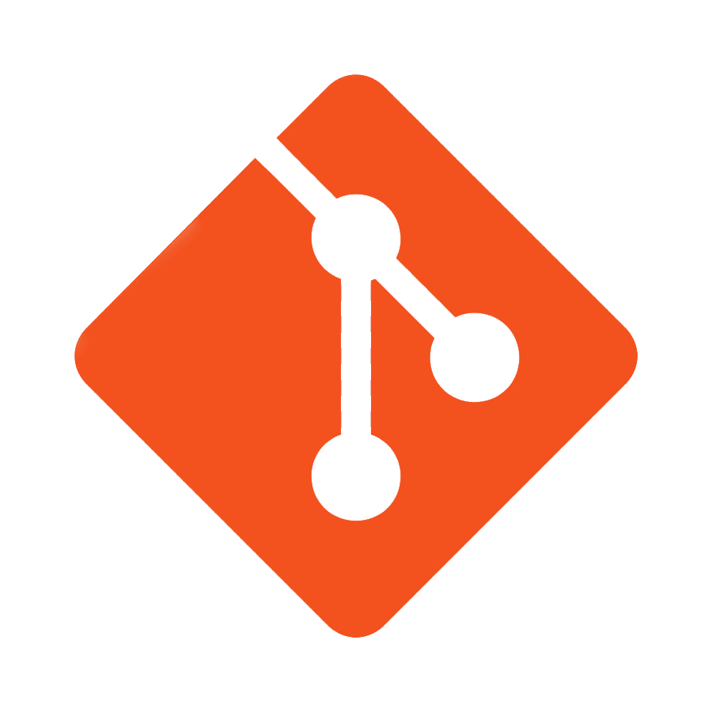

Experienced professional with a background in project management, technical skills, and process improvement. With a coding certification and a degree in Information Technology, I offer a strong foundation for transitioning into Full Stack Development. Having served in various leadership and problem-solving roles in the military, I am now eager to apply these skills in the IT industry. Thriving in agile settings, I prioritize continuous learning, collaboration, and excellence.


 



Full Stack Project: Developed complex web application, integrating SQL databases with a React- based front-end, demonstrating proficiency in full-stack development and project management.
Front-End Development Initiative: Designed and implemented a responsive, user-friendly website using HTML5, CSS, and JavaScript, focusing on optimizing user experience and interface design.
Back-End Integration Project: Developed a robust back-end system using JavaScript and SQL, successfully integrating with front-end applications to enhance data processing and storage capabilities.